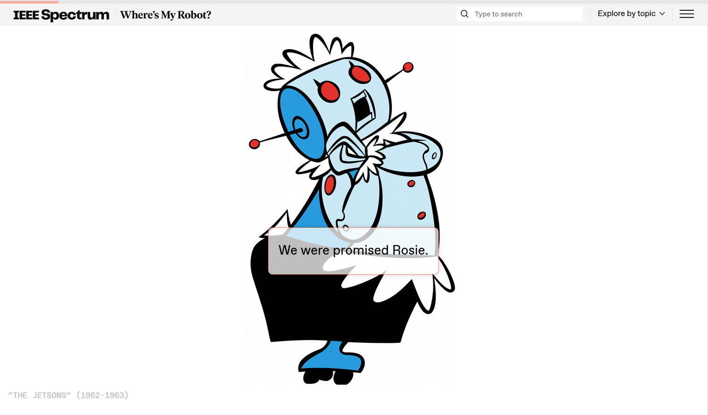
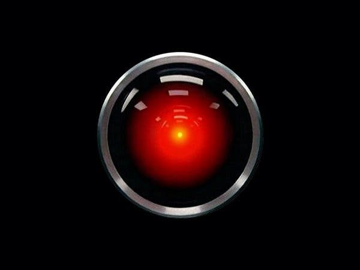
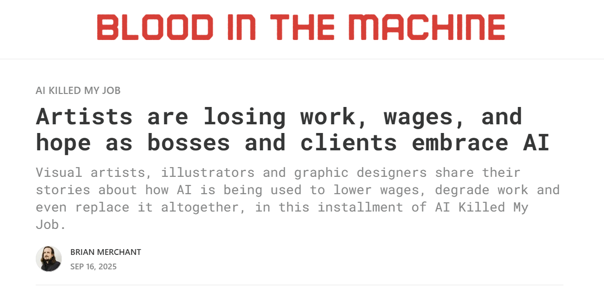
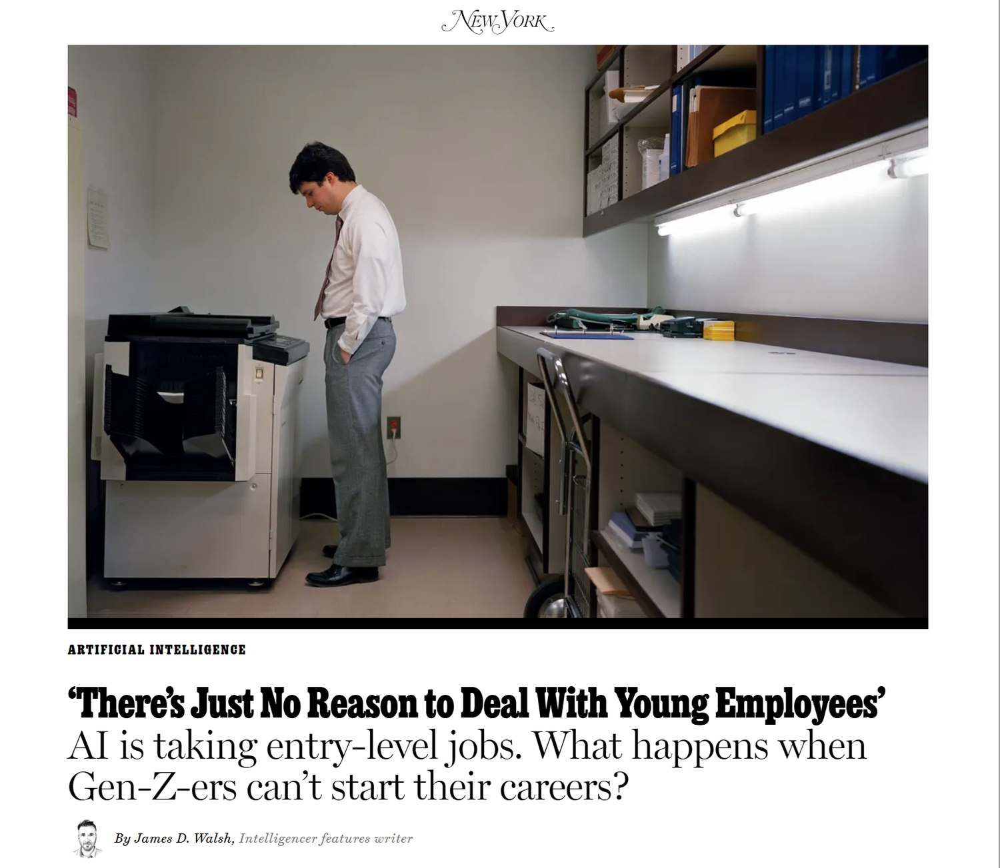
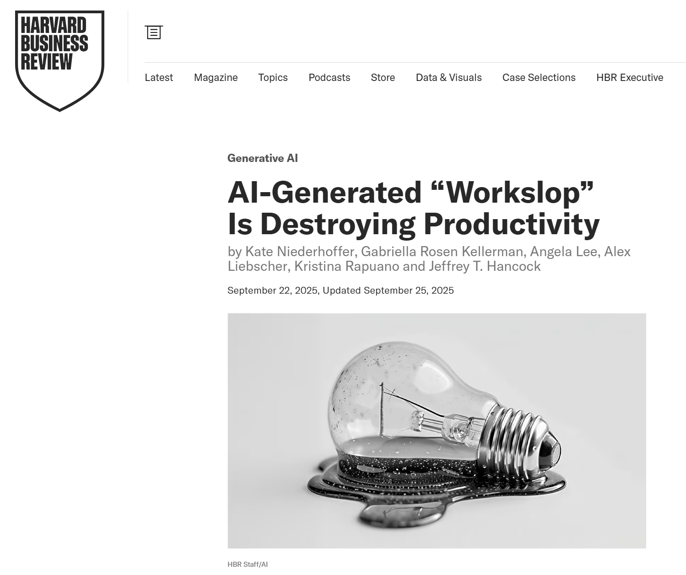
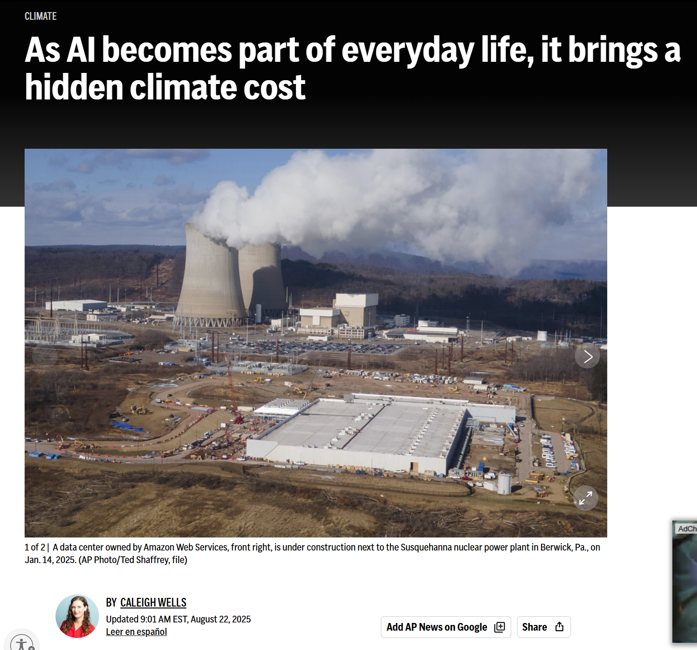
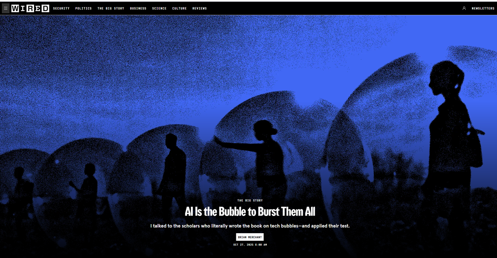
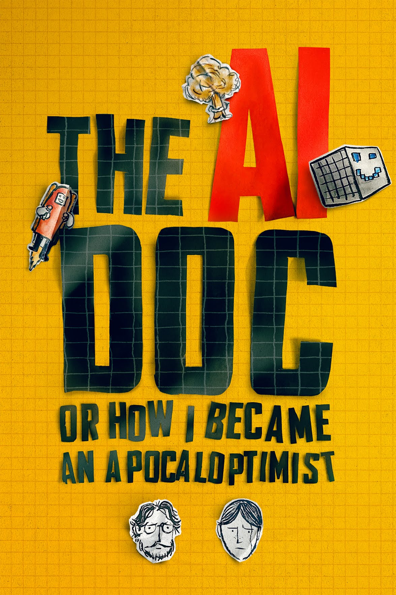
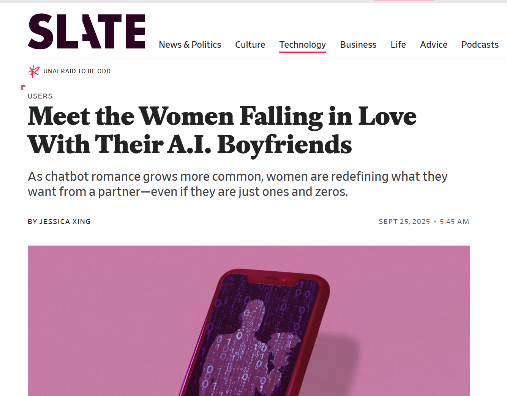

Module Seven
> ENG 3861 // APR 12 – APR 25, 2027_

“We were promised Rosie”: the helpful AI of 1960s cartoons

HAL 9000, from 2001: A Space Odyssey (1968): the AI we were warned about
The Luddites weren't against technology; they objected to how it was used against workers
Lisa Spiro on the values of DH
Instead of trying to pigeonhole digital humanities by prescribing particular methods or theoretical approaches, we can instead focus on a community that comes together around values such as openness and collaboration.
For the digital humanities, information is not a commodity to be controlled but a social good to be shared and reused.
Yet collaboration isn’t just about being more productive but also about transforming how the humanities work.
Failure is accepted as a useful result in the digital humanities, since it indicates that the experiment was likely high risk and means that we collectively learn from failure rather than reproducing it (assuming that the failure is documented).
Which of Spiro's values have you seen in the AI tools we used this semester? Which were missing?

Artists on what AI has done to their work source

Entry-level jobs and the AI future of work

“Workslop”: when AI output creates more work for everyone else

The physical footprint of the cloud

Hype vs. reality: is AI a bubble?
Ted Underwood's more interesting upside
Cultural technologies work by transmitting and enacting patterns of behavior. Other examples might include libraries, the printing press, or language itself.
Generative AI represents a second step change in our ability to map and edit culture. Now we can manipulate, not only specific texts and images, but the dispositions, tropes, genres, habits of thought, and patterns of interaction that create them.
My goal here is to convince people who use AI that “this is like writing” is potentially exciting—and to specify some of the things we would need to do to make it exciting.
A future where human beings have the ability to map and edit culture could be very dark. But I don’t think it will be boring or passively depressing. If we think this sounds boring, we’re not thinking hard enough.

Apocalypse or optimism? Most of the real questions are somewhere in between. source
watch the video, then do the exercise and post by Thursday

Custom chatbots are everywhere. Every one of them runs on instructions someone wrote.
sample instructions: collaboration + openness
> Don't hand over answers. Ask the student questions that help them work it out, and build on what they say. Always say where information comes from, and say clearly when you're not sure.Your companion and ELIZA are both personalities made of instructions. What's different, and what's surprisingly similar?
Post: instructions + 3 test screenshots (4 pts), a 250+ word reflection (3), one citation (1), two replies (2).